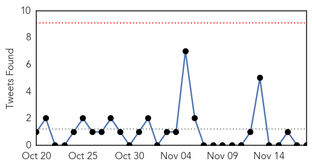

30 Day Trends
Web: 1 alerts, 0 warnings
Twitter: 0 alerts, 0 warnings
Top Articles:
- 0.981
- Two avian flu outbreaks in northwest, National, Phnom Penh Post
- 0.976
- More Than 2,000 Ducks Dead After Latest Bird Flu Outbreak
- 0.970
- Sickness outbreak that affected 56 at Porthcawl bar confirmed as norovirus
- 0.958
- Minding Health Matters: MOH responds to increase in bacterial illnesses - Health
- 0.942
- H5N1 bird flu outbreak recorded in northwest Cambodia
- 0.935
- Virus could take bite out of mozzies
- 0.928
- Steps afoot to prevent disease outbreak in TN; 55,000 screened
- 0.909
- Shigellosis Infection Cases Continue to Rise in Winnebago County
- 0.905
- Be prepared for flu, travel in wintery weather
- 0.900
- Steps afoot to prevent disease outbreak in Tamil Nadu; 55,000 people screened
- 0.898
- "Good" mozzie virus might hold key to fighting human disease
- 0.887
- Charlie Sheen is HIV positive, but what does ‘undetectable’ really mean?
- 0.868
- Local Petersburg providers prepare for flu season
- 0.866
- Bangladesh opposition leaders to hang for war crimes
- 0.816
- First Flu Deaths Reported in Iowa
- 0.773
- Charlie Sheen Has HIV: What It's Like to Live with the Virus
- 0.752
- Uber Offers Flu Shots from Nurses for $10
- 0.747
- Health content from National Hog Farmer
- 0.746
- Pet Dogs And Cats Pass Drug-Resistant Infections To Humans, Experts Warn : LIFE : Tech Times
- 0.733
- Guarding against the parovirus
- 0.694
- Dr. Andres Sanchez Now Accepts New Gum Disease Patients in Edina, MN for Revolutionary Laser Gum Surgery
- 0.677
- MSF treats 60 people wounded in grenade explosions
- 0.677
- Good Question: Are We Winning The War Against HIV
- 0.670
- Some facts about HIV in the United States
- 0.667
- Kenya : Elite UN Board calls for new approaches in dealing with looming water challenges
- 0.665
- O nouă cruciadă politică
- 0.662
- Illinois health departments urge patients to get flu shots
- 0.662
- UC Health alerting patients about leaked medical records
- 0.650
- Steps afoot to prevent disease outbreak in Tamil Nadu; 55,000 people screened
- 0.649
- Disease threatens PNG drought areas
- 0.626
- Uber to deliver help to sick during flu season
- 0.624
- World Antibiotics Awareness Week
- 0.602
- Rates of Syphilis, Gonorrhea and Chlamydia Are Rising
- 0.600
- Burundi: MSF treats 60 people wounded in grenade explosions
- 0.585
- Health Officials Concerned About More Cases of Syphilis In Oregon
- 0.582
- South Sudan: Dramatic increase in patients in Malakal’s UN site as living conditions jeopardise health of thousands
- 0.580
- Before Antibiotics, a Cut on Your Finger Could Kill You
- 0.566
- INFORMATION AND SERVICES IN GOA. Goa News, Goa Konkani News, Goa Sunaparant News, Goan Konakani News, Goa Video News, Goa Yellow Pages
- 0.564
- 200 WSU students being tested for TB
- 0.560
- Afghanistan Humanitarian Bulletin Issue 45
- 0.559
- Health Officials Report Shortage In FluMist « CBS Chicago
- 0.557
- Burundi: MSF treats 60 people wounded in grenade explosions
- 0.546
- St. George's University's Public Health Master's Program Receives Maximum Accreditation
- 0.534
- Most Tanks Across District Set to be Recharged
- 0.528
- Medical student Waldo Zamor delivers grand rounds on unfamiliar tropical disease
- 0.527
- 'Kissing bug' infections still a problem in Texas
- 0.506
- 45m at risk of bilharzia
- 0.505
- Chipotle E. coli Outbreak Numbers Fall from 50 to 37
- 0.504
- Majority of public confused over antibiotic resistance â' WHO survey - The New Times
- 0.504
- Ecuador and Belarus sign memorandum of understanding on health
Showing top 50 articles...
Top Tweets:
-
No tweets found for Nov 18, 2015
Web/News Articles

Tweets
Article Locations